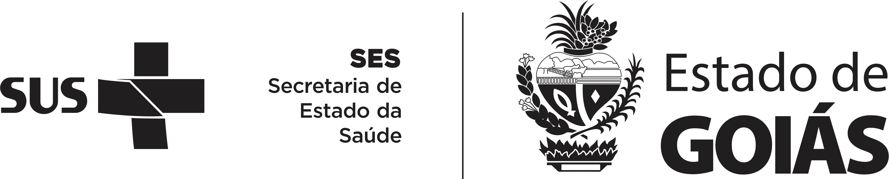

PAUTA DA REUNIÃOSaúde &
Saúde &
Economia.
Custeio das policlínicas: valores atuais,
LOA 2027 e aditivo — 1ª fase.
Nesta apresentação 06 UNIDADES
IComparativo de custeio mensal
Custeio atual · LOA 2027 · Aditivo — 1ª fase
POLICLÍNICAS
Formosa · Goianésia · Goiás
Posse · Quirinópolis · SLMB
TERMOS ADITIVOS & PROGRAMAÇÃO ORÇAMENTÁRIAMaterial de apoio à reunião
POLICLÍNICAS / CUSTEIO MENSAL
Custeio das policlínicas
Custeio atual, LOA 2027 e custeio mensal no aditivo — 1ª fase.
↔ Deslize para consultar todas as colunas.
| Unidade | Custeio atual | Custeio LOA 2027 | Custeio mensal no aditivo — 1ª fase | Diferença mensal Atual − Aditivo |
|---|---|---|---|---|
| P. Formosa | R$ 2.401.345,13 | R$ 1.908.333,33 | R$ 2.058.789,40 | R$ 342.555,73 |
| P. Goianésia | R$ 2.280.862,07 | R$ 1.875.000,00 | R$ 1.958.267,82 | R$ 322.594,25 |
| P. Goiás | R$ 2.677.633,67 | R$ 1.983.333,33 | R$ 2.093.186,93 | R$ 584.446,74 |
| P. Posse | R$ 3.069.301,80 | R$ 2.341.666,67 | R$ 2.627.874,89 | R$ 441.426,91 |
| P. Quirinópolis | R$ 2.327.041,25 | R$ 1.933.333,33 | R$ 2.088.387,67 | R$ 238.653,58 |
| P. SLMB | R$ 1.966.844,75 | R$ 1.791.666,67 | R$ 1.860.858,34 | R$ 105.986,41 |
| Total | R$ 14.723.028,67 | R$ 11.833.333,33 | R$ 12.687.365,05 | R$ 2.035.663,62 |
DIFERENÇA TOTAL MENSAL
R$ 2.035.663,62Custeio atual − Custeio mensal no aditivo — 1ª fase
SECRETARIA DE ESTADO DA SAÚDE DE GOIÁS
Obrigado.
Reunião com a Economia